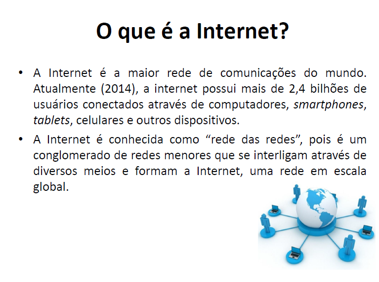

Bases da Internet
Nesta matéria lecionada pelo professor Jorge estudamos da evolução da internet e o surgimento da Web até os problemas que vieram junto com ela.

O Futuro do Transporte
A maneira na qual o ser humano se locomove vem mudado num ritmo acelerado, depois de milênios tendo os veículos de tração animal como principal meio de transporte, no século 18 começam a surgir as primeiras versões do que viria ser o automóvel. Depois de todo essa revolução tecnológica continuamos a inovar, não apenas com o objetivo de facilitar as nossas vidas, mas também, para consertar problemas que causamos ao meio ambiente e por falta de escolha, pois alguma hora as fontes de energias não renováveis vão acabar.
Os níveis de poluição no ar estão causando muitos problemas de saúde em vários países, em especial na China e Índia, no entanto, os países que estão mais empenhados em fazer mudanças são a França e o Reino Unido sendo que as autoridades de Paris decidiram antecipar a proibição da circulação de carros movidos a combustão para 2024, algo que estava previsto para 2030.
Tanto França quanto Reino Unido afirmam que pretendem proibir totalmente a venda de veículos movidos a combustão até 2040, sendo substituídos por elétricos.
Com o estado que se encontra na China, o governo chinês também possui medidas a serem cumpridas, além do limite populacional de certas cidades, pretendem fazer com que até 2030 a maioria dos carros sejam pelo menos híbridos.
Além dos problemas ambientais citados, a questão da necessidade de rapidez e conforto também estão gerando mudanças no tráfego urbano, principalmente em países desenvolvidos como da Europa e os EUA, onde está havendo uma queda na compra de automóveis, devido ao compartilhamento de carros que está se tornando cada vez mais comum. O compartilhamento funciona com a utilização de aplicativos.
Pode se notar que a ideia de ter um veículo próprio corre o risco de se tornar algo ultrapassado, porque além dos carros compartilhados, os carros autônomos estão se tornando mais inteligentes.